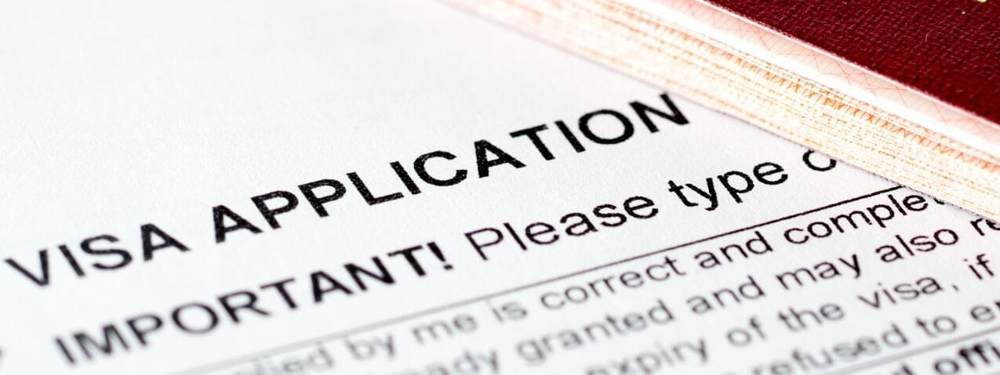

خدمات ما
چنانچه قصد اخذ ویزای توریستی در حوزه شنگن و یا کانادا را دارید، فقط کافی است از طریق وبسایت یا با یک تماس کوتاه با کارشناسان ما، بهترین مشاوره و راحتترین راه دریافت آن را پیش پای شما خواهند گذاشت تا با صرف کمترین هزینه و کوتاهترین زمان به بهترین نتیجه برسید.
روند انجام کار بدین ترتیب است که کارشناسان با تجربه ما با تکیه بر سابقه موفق در دریافت دهها ویزا، بهترین راهنمایی را به شما ارائه میدهند تا بهترین تصمیم را گرفته و به نتیجه مثبت برسید.
چنانچه مایل هستید از کشورهای زیبای اروپا دیدن نمایید، کافیست اراده کنید و بقیه کارها را به ما بسپارید تا کارشناسان مجرب ما با رزرو بهترین هتلها، رزرو بلیط پروازهای شرکت های معتبر و دریافت سوابق شغلی، تحصیلی، مالی و خانوادگی شما به بهترین نحو ممکن فرمهای آنلاین اپلیکیشن را تنظیم نموده و پس از گرفتن نوبت مصاحبه طبق سلیقه و زمان مورد نظر شما و با کمترین هزینه شما را برای یک مصاحبه آرام و با دست پر آماده نموده، و با آماده نمودن مدارکی که به شما پیشنهاد میشود به سفارت مراجعه نموده و مدارک خود را ارائه نمایید. پس از طی مراحل بررسی و راستیآزمایی، طبق نظر کنسولگری ویزای شما آماده خواهد شد.
با توجه به دهها پرونده موفق در صدور ویزای توریستی ما میتوانیم ادعا کنیم که چنانچه مدارک شغلی، مالی، تحصیلی و خانوادگی شما مرتب تنظیم شده باشد، صدور ویزای شما با احتمال بالا موفق خواهد بود.
